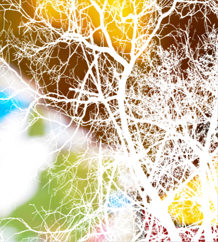

Why should we be afraid of changes? All life is change
After fifty-eight years old, I don't know if happy but lucky, my professional activity has given me a generous income, as well as great satisfactions and a lot of work, but it has kept me away from the ideals and worries about the past, when I began my vocation for arts.
At this point, I have returned to my favourite hobby, which I mistakenly discarded a long time ago. I have started the road back and I have never been so conscious of me. I have never felt so protagonist of my life and I have never enjoyed so much of each moment.
I'm able to change the scenes as my creativity allows, filling each minute with full happiness. For all these reasons, I invite everyone, young and old to reborn, periodically.
I also want to claim the right of old people to continue working, not for the past but for their ACTIVE PRESENT. This is the reason for this exhibition. I hope you enjoy with my work.